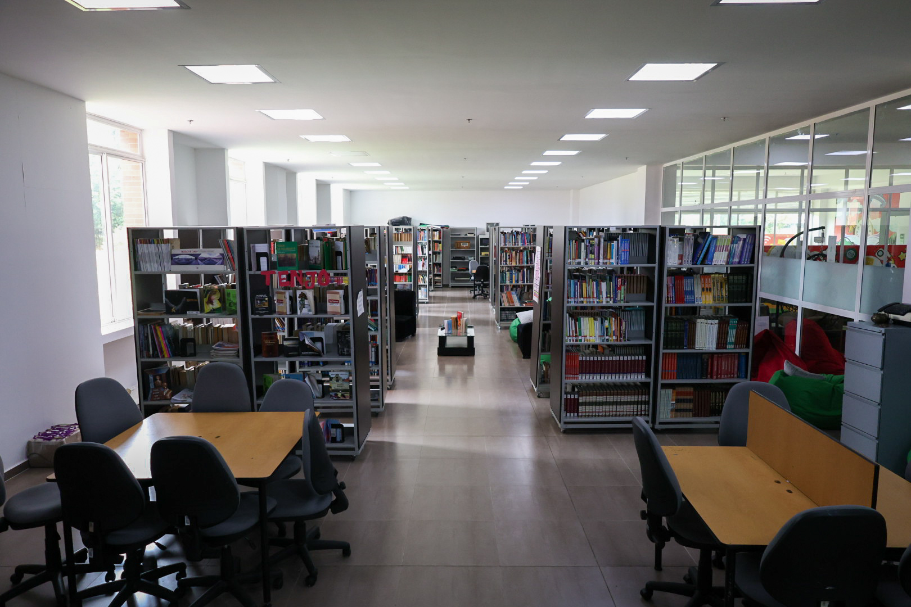
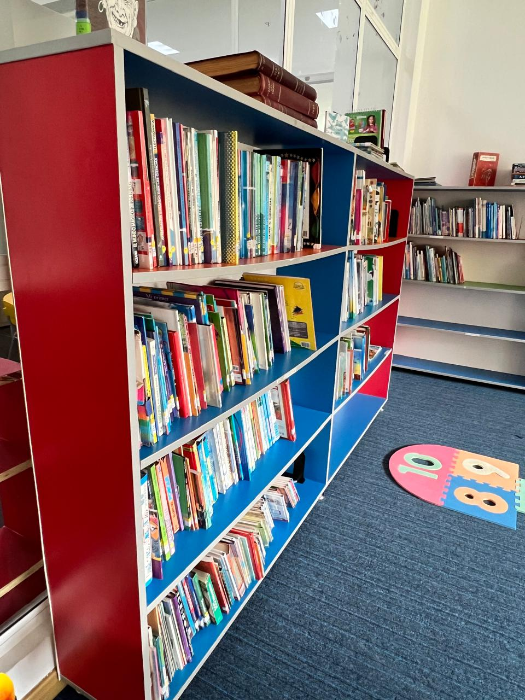
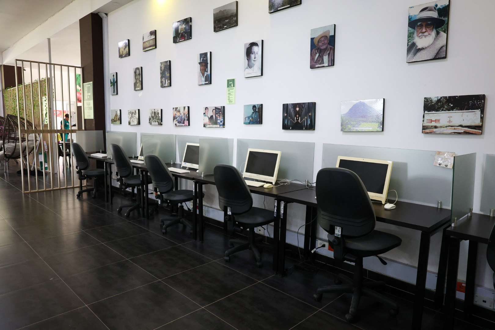
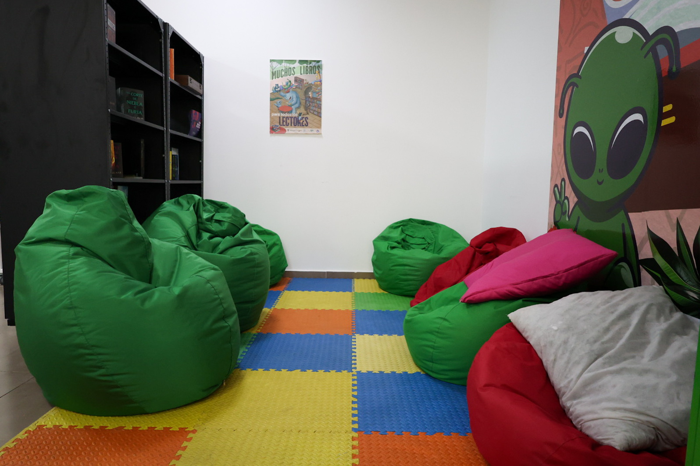
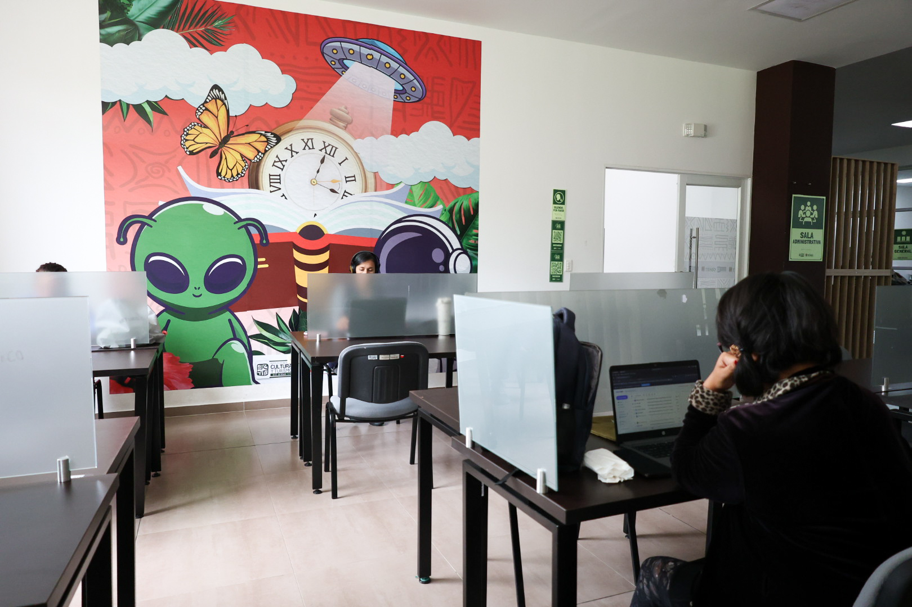
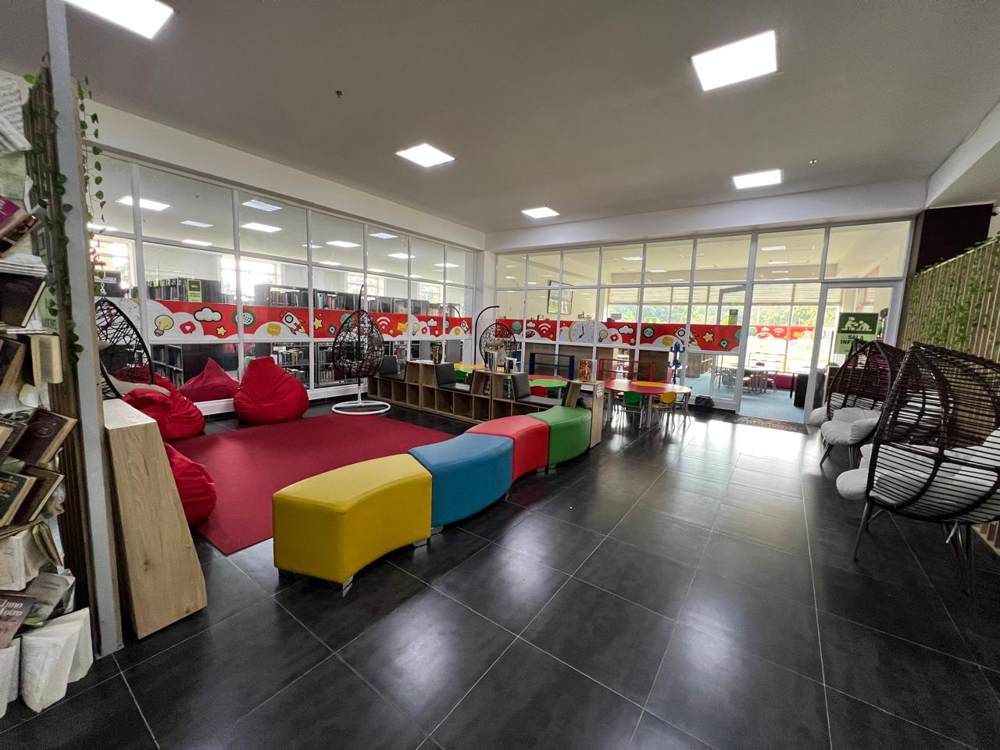
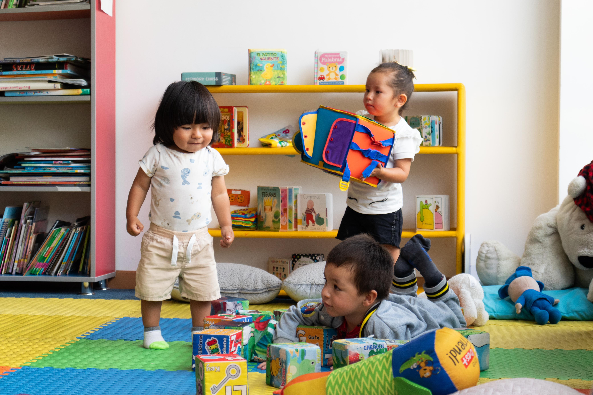
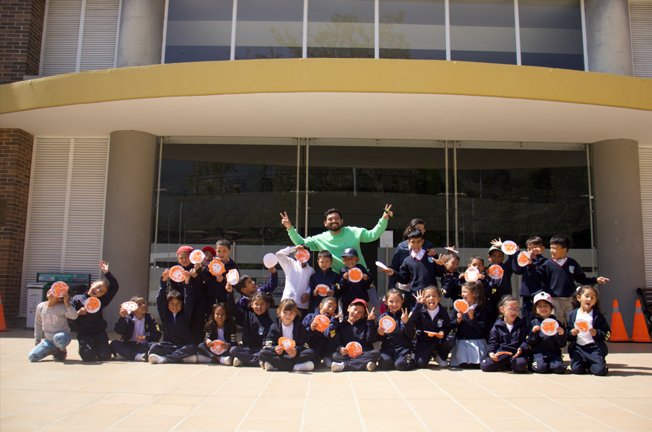
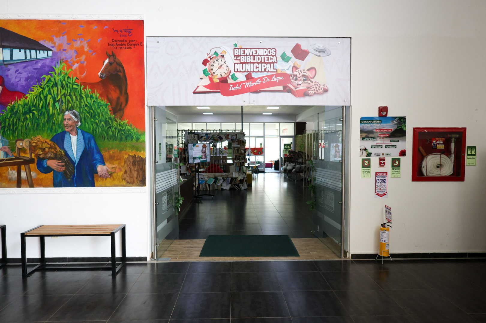

📚Bibliopréstamo externo
Permite llevar libros a casa, haciendo de la lectura una experiencia que continúa más allá de la biblioteca.
Lunes a viernes de 8:00 a.m. a 1:00 p.m. y de 2:00 p.m. a 7:00 p.m.

Descubre los servicios que necesitas y encuentra la información de manera clara, rápida y accesible para toda la comunidad.
Envíanos un mensaje y te responderemos lo antes posible.


Permite llevar libros a casa, haciendo de la lectura una experiencia que continúa más allá de la biblioteca.

Espacios disponibles para la lectura y consulta en sala, ideales para estudiar o explorar sin interrupciones.

Acceso a herramientas tecnológicas e información que facilitan la búsqueda, el aprendizaje y la investigación.

Proyecciones que invitan a reflexionar, conectando el cine con la memoria, la cultura y el contexto.

Acompañamiento directo para resolver inquietudes y facilitar el uso de los servicios bibliotecarios.

Orientación personalizada para encontrar lecturas, recursos y rutas de búsqueda dentro de la biblioteca.

Un primer acercamiento a la lectura desde el juego, la imaginación y la exploración para niños y niñas.

La biblioteca sale al encuentro de la comunidad, llevando la lectura y la cultura a distintos espacios del municipio.

Apoyo a procesos de aprendizaje mediante herramientas, lecturas y acompañamiento continuo.
¡Visítanos y aprovecha todo lo que nuestra biblioteca tiene para ti!